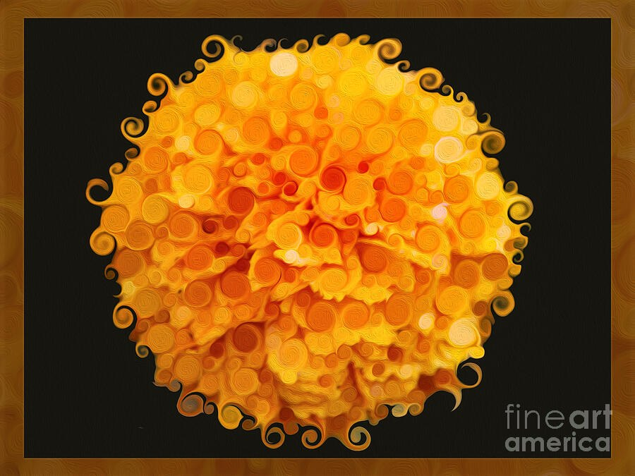

The Library · Omaste Witkowski
A Flower Built From Hundreds of Tiny Spirals, Glowing Like a Sun
Spiral Sun Bloom is a single round orange flower on near-black, made of small swirls and rounded dabs that turn it into a glowing orb.

Choose your size, paper, canvas, metal or frame. Printed, shipped and guaranteed by Fine Art America.
Picture a single flower head, round as a sun, floating in the middle of a near-black field. The orange is saturated, the yellow is golden, and the whole shape seems to give off its own light.
Now step closer. What looked like petals is really hundreds of small spirals and rounded dabs, and curly tendrils flick off the edge of the circle. This is the piece I'm offering you here.
Choose Your Print on FAAMade to order by Fine Art America · 30-day money-back guarantee
What Your Eye Finds When You Look Closer
From across a room, you see a bold orange sphere on black. It has the high-contrast punch of a spotlight, and the shape could pass for a pom-pom or a small sun.
Come closer and the flower resolves into swirls. Pale cream-yellow discs gather across the top and right, where they catch the light. Deep amber and red-orange settle into the folds toward the center, so the bloom has depth even though it is built from flat little spirals.
Then the motion shows up. The spirals repeat across the whole flower and give it a gentle rotating energy, and the tendrils along the outline curl outward like small flourishes. Most flower art is soft, realistic or pastel. This one is playful and a little fiery, and I made it that way on purpose to stand out.
The thin black inner mat and the wide brown border, which carries its own faint swirl pattern, frame the flower the way a matted print is framed. It already looks finished.
What You'll See in the Piece
- A single round, ruffled flower head fills the center. The strong figure-against-ground symmetry makes it a focal point you notice from across the room.
- The surface is made of hundreds of small spirals and rounded dabs. It has a swirled, painterly texture that rewards a closer look.
- Saturated orange and golden yellow glow against near-black, with cream-yellow highlights and red-orange in the folds. The warm color reads as cheerful and bold.
- Curly tendrils trim the outer edge. They give the circle a lively, whimsical outline instead of a hard edge.
- A thin black mat and a wide brown swirl-textured border frame the flower, so it has the look of a matted print.
Where It Belongs on Your Wall
The black field and warm glow let this piece hold a spot on its own. It suits a wall that needs one burst of warm color, especially near dark furniture or deep wall tones. A desk wall, a hallway or a kitchen nook would all suit it.
The symmetrical, centered composition keeps it calm even though the color is loud. It also pairs well with other dark-ground florals, if you like building a small group.
- This is for you if you want a flower picture that is bold and high-contrast rather than soft or pastel.
- This is for you if you love orange and golden yellow and want that color to glow against black.
- This is for you if you like painterly, swirled texture and a little whimsy in your art.
- This is for you if you want a centered focal piece that already looks matted and ready to hang.
Prints of Spiral Sun Bloom have already been ordered twice in the 8 x 6 size.
What You Get When You Choose a Print
- A print of Spiral Sun Bloom, made to order by Fine Art America.
- Your choice of size, paper, canvas, metal or frame, so you can pick the finish that fits your wall.
- A 30-day money-back guarantee from Fine Art America.
- Shipping from their facility, typically within a few business days.
- The image as shown on the listing, with the black inner mat and swirl-textured brown border.
Choose Your Print on FAAMade to order by Fine Art America · 30-day money-back guarantee
Questions before you choose
Will the black mat and brown border come with my print?
The border and mat appear in the listing image. Use the preview on the Fine Art America listing to see how they look in the size and finish you choose.
What if it doesn't look right on my wall?
Fine Art America offers a 30-day money-back guarantee, so you can order and see it in your space.
Is this a painting?
The surface looks swirled and paint-like, and that is how I describe it. Your print reproduces the image as shown on the listing.
Imagine that glowing orange sphere on your wall, with the dark ground pushing the warm color forward and the tiny spirals drawing people in for a second look.
If it makes you smile, go to the Fine Art America listing and choose your print.
Choose Your Print on FAAMade to order by Fine Art America · 30-day money-back guarantee
Find your own piece with the art adventure · Ask the gallery what fits your wall